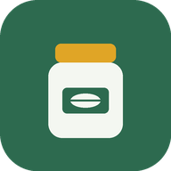

Choisis les jours où tu prévois un repas plus copieux (resto, apéro, dîner chez des amis). La marge plaisir, 10 % de ta semaine, s'y concentre et les autres jours restent stables.
Estimation par la formule de Mifflin-St Jeor ajustée à ton activité. C'est un ordre de grandeur, qui ne remplace pas l'avis d'un médecin ou d'un diététicien, surtout en cas de pathologie, de grossesse ou d'objectif sportif précis.
Ces recettes s'ajoutent à ta liste de courses et à ton plan de batch cooking. Pour les repas sans cuisine, passe par l'onglet Menu.
Vise le code-barres d'un produit : tu obtiens son Nutri-Score officiel, des produits mieux notés du même rayon et des recettes pour l'utiliser.
Données produits : Open Food Facts, base collaborative sous licence ODbL. Une connexion Internet est nécessaire pour cette partie.
Prix moyens indicatifs ajustés au type de magasin, sans lien avec les tarifs réels de l'enseigne.
Note un plat ou une habitude (« kebab frites », « pâtes au beurre et jambon », « céréales chocolatées »). L'appli calcule sa note à partir de la table Ciqual et la compare aux repères du Programme national nutrition santé.
Sel, poivre, huile et épices sont comptés comme acquis.
À partir des plats de ta semaine, l'appli organise une session de préparation : ce qui cuit longtemps part en premier, tu prépares la suite pendant la cuisson.
Depuis Marmiton, Jow ou n'importe quel site : sélectionne le texte de la recette, puis touche Partager et choisis Garde-manger. Tu peux aussi le coller ici.
Calendrier pour la France métropolitaine. De saison, un légume coûte en général moins cher et a plus de goût.
Tout ce que tu saisis reste dans ce téléphone : rien n'est envoyé sur Internet, sauf les codes-barres que tu cherches sur Open Food Facts. Pense à faire une sauvegarde de temps en temps, par exemple avant de changer de téléphone.
Dans l'ancienne version (dans Claude), ouvre l'onglet Objectif et touche « Exporter mes données » : le texte est copié. Colle-le ici.
Supprime ton profil, tes plats, tes habitudes et ta liste de courses de ce téléphone.
Valeurs nutritionnelles : table de composition Ciqual 2025 de l'ANSES (Licence Ouverte 2.0). Note des plats calculée avec la méthode du Nutri-Score 2023 appliquée à la recette : c'est une estimation, le logo officiel ne concerne que les produits emballés. Produits scannés : Open Food Facts (ODbL). Repères de consommation : Programme national nutrition santé (Manger Bouger).